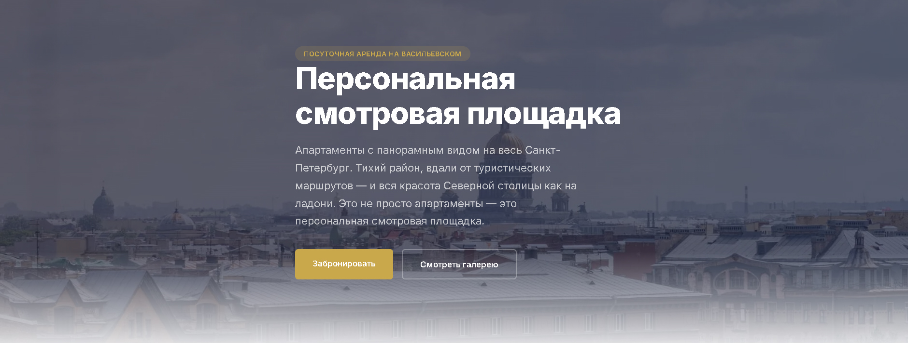

TwoEras
Двуязычный лендинг + ИИ-ресепшн для посуточной аренды
Сайт бизнеса аренды апартаментов на Васильевском острове. Привлекает гостей через поиск, показывает галерею и видео-тур, интегрируется с HomeReserve, Telegram и Cloudflare Worker. ИИ-ресепшн отвечает гостям 24/7.
- Адаптивная вёрстка, WebP, галерея с лайтбоксом
- Двуязычность RU/EN с SEO-разметкой, Open Graph, Schema.org, Метрика
- Форма → Cloudflare Worker → Telegram
- ИИ-ресепшн для автоматических ответов гостям
HTML5CSS3JS
Cloudflare WorkersTelegram API